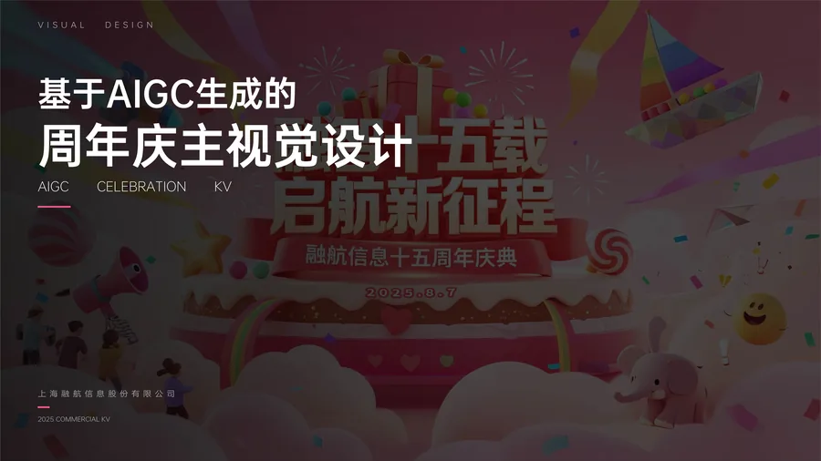
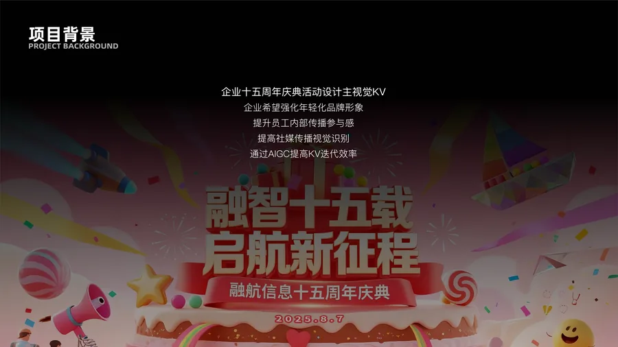
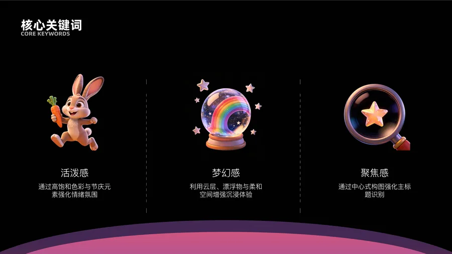
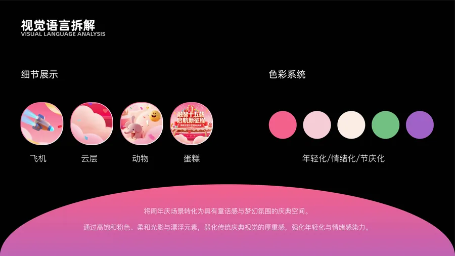
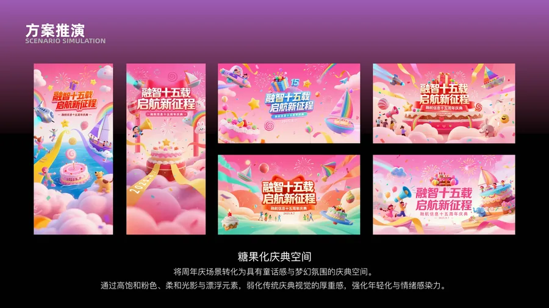
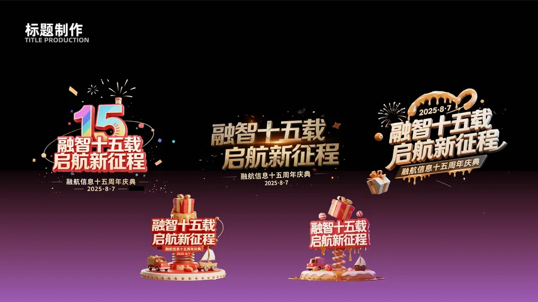
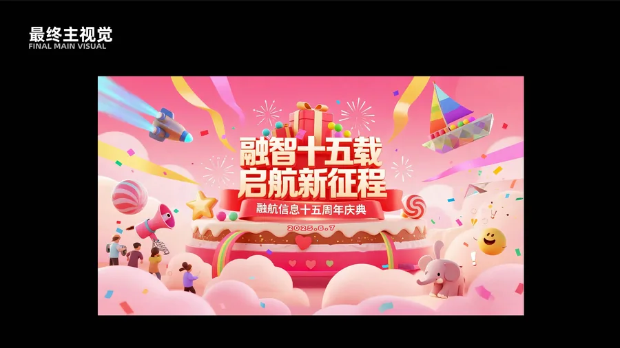
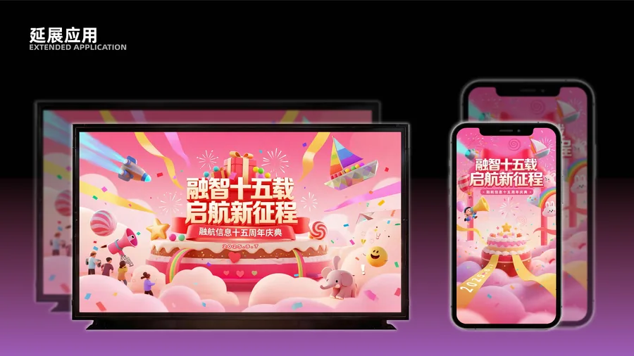
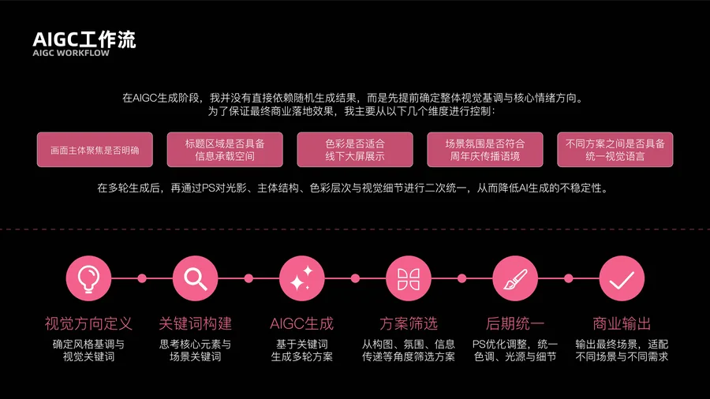
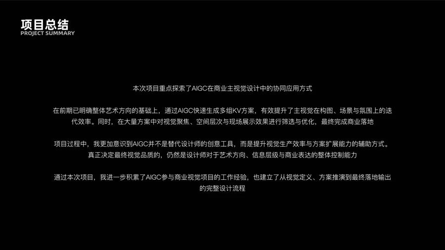

企业十五周年庆典活动设计主视觉KV。企业希望强化年轻化品牌形象，提升员工内部传播参与感，提高社媒传播视觉识别，通过AIGC提高KV迭代效率。
活泼感 — 通过高饱和色彩与节庆元素强化情绪氛围
梦幻感 — 利用云层、漂浮物与柔和空间增强沉浸体验
聚焦感 — 通过中心式构图强化主标题识别
将周年庆场景转化为具有童话感与梦幻氛围的庆典空间。通过高饱和粉色、柔和光影与漂浮元素，弱化传统庆典视觉的厚重感，强化年轻化与情绪感染力。色彩系统采用年轻化/情绪化/节庆化的搭配，配合飞机、云层、动物、蛋糕等细节元素丰富画面层次。
在AIGC生成阶段，先提前确定整体视觉基调与核心情绪方向，从标题区域信息承载、色彩适屏展示、场景氛围传播语境、方案间统一视觉语言等维度进行控制。
视觉方向定义 → 关键词构建 → AIGC生成 → 方案筛选 → 后期统一 → 商业输出
在多轮生成后，通过PS对光影、主体结构、色彩层次与视觉细节进行二次统一，降低AI生成的不稳定性。
本次项目重点探索了AIGC在商业主视觉设计中的协同应用方式。通过AIGC快速生成多组KV方案，有效提升了主视觉在构图、场景与氛围上的迭代效率。AIGC并不是替代设计师的创意工具，而是提升视觉生产效率与方案扩展能力的辅助方式。真正决定最终视觉品质的，仍然是设计师对于艺术方向、信息层级与商业表达的整体控制能力。









